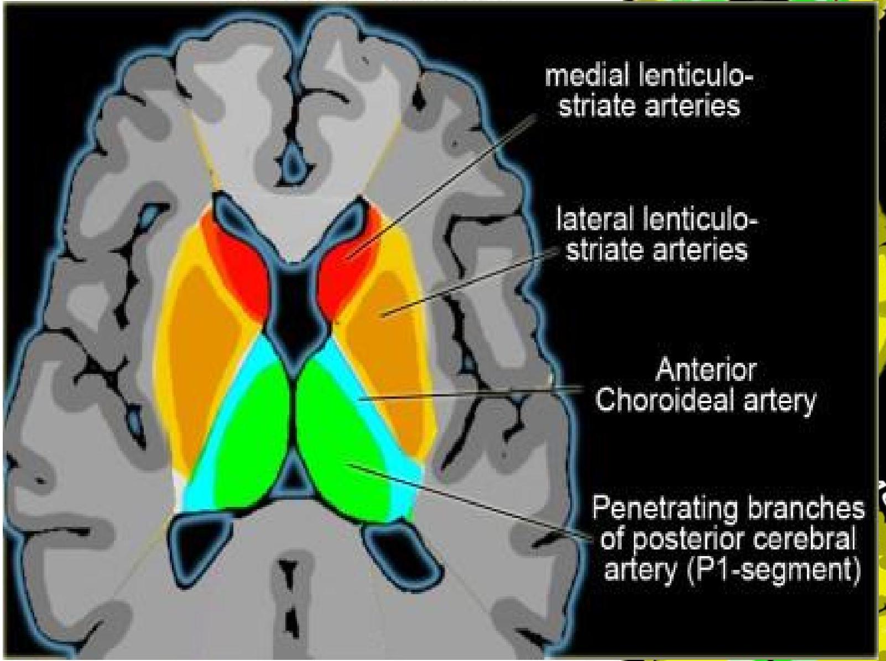
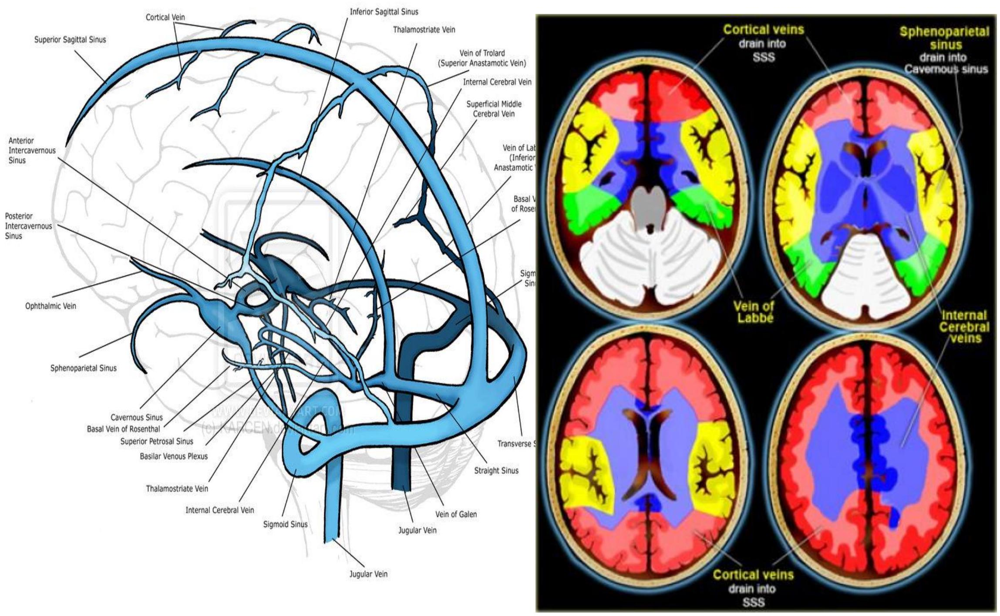
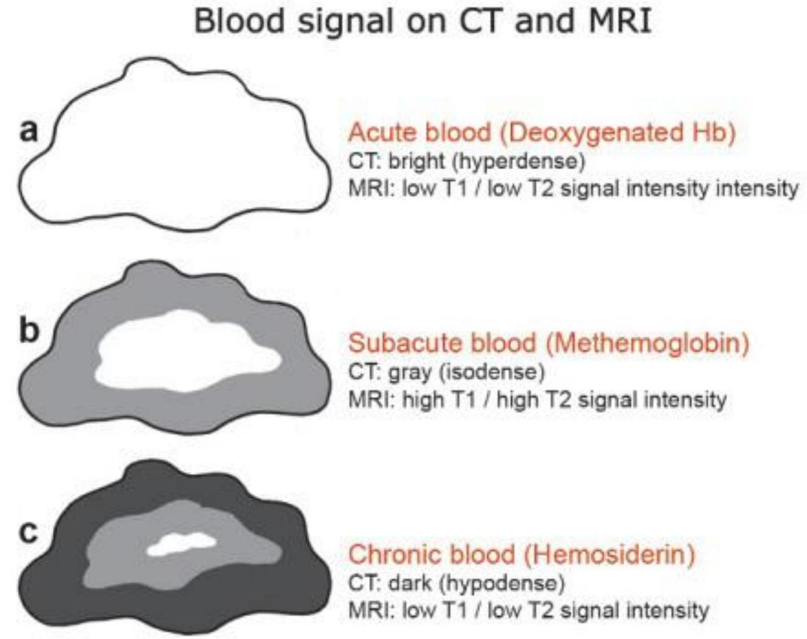
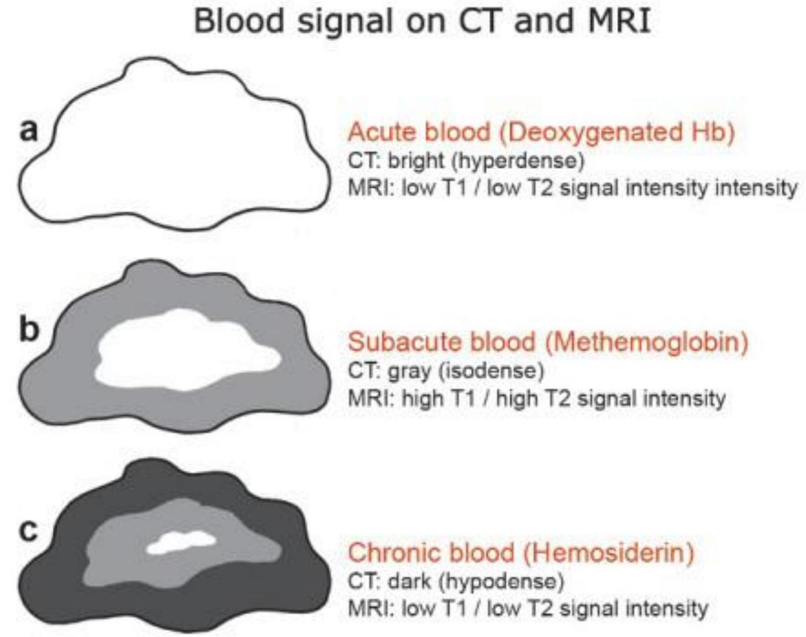

Craniocerebral Trauma (Head Injury)
Dr N. M. Kimani Lecturer DIRM
8th Dec. 2016
Craniocerebral Trauma (Head Injury)
-
Injuries to the skull and brain
- blunt
- penetrating.
- Commonest indications for neuroimaging.
-
A major cause of;
- disability,
- morbidity
- mortality
- Has significant direct and indirect financial costs to individuals and society.
- Imaging plays an important role in diagnosis and management.
Epidemiology
- Over 10 million people sustain TBIs resulting in death or extensive hospitalization. (WHO;2011 estimates)
- Over 4.5 million deaths occur annually due to TBIs (10% deaths in the world).
- BY 2020 TBIs will be the leading cause of death and disability.(WHO)
- TBIs account for 6-7% of all ED visits. (USA and Canada )
Kenya Situation
- Over 3,000 Kenyans die as a result of RTA every year and about 40 % are pedestrians.
- TBI accounts for about 50% of all RTA deaths (Saidi, Macharia, & Atinga, 2005).
- In Kenya, the economic cost of road crashes is 5.6% of the GDP (about 300 billion KSHS annually).
NTSA Comparison of Fatalities 2014/2015
- 2015～2014

Causes of Head Injury
- Motor vehicle accidents commonest cause.
- Assault.
- Firearms ; intentional or unintentional.
- Falls.
- Sport related.
- Non-Accidental Trauma in children

Causes of Head Inju
- Motor vehicle accidents -commonest
- Assault.
- Firearms ; intentional or unintentional.
- Falls.
- Sport related.
- Non-Accidental Trauma in chil
Motor Vehicle Accidents --Commonest Cause

- Assault.
- Firearms ; intentional or uninten
- Falls.
- Sport related.
- Non-Accidental Trauma in childre

Traumatic Injuries
Major Causes of Traumatic Brain Injuries

Source: National Center for Injury Prevention and Control, CDC
Review of Anatomy
- scalp,
- skull
- meninges
- Vascular anatomy of the brain.
Scalp
- S: Skin(3-8mm)
- C: Connective tissue
- A: Aponeurosis/Galea
- L: Loose connective tissue/subgalea
- P: Periosteum.
These are important for location of haematoma.

Skull
- Two layers of cortical bone -inner & outer table separated by cancellous bone(diploe)

Meninges
Three layers of protective membranes
- Dura:( 2 layers) Periosteal-outer layer attached to bone meningeal: inner layer closer to brain. The two layers are fused except in areas enclosing dural sinuses.
- Arachnoid: middle layer 'spider web like.'
- Pia : Attached to brain.
Pia and arachnoid form the leptomeninges.
BRAIN ARTERIAL SUPPLY/TERRITORIES
Cortical Vascular Territories
Cerebral Venous Drainage
Imaging Modalities
- Plain skull radiographs (X-Ray): No role in the modern evaluation of TBI.
- 1/4 of patients with fatal brain injuries have no skull fracture at autopsy.

NECT
- Fast, available, sensitive for both bone and brain injury.
- Both bone and soft tissue reconstruction algorithms should be used. Soft tissue reconstructions should be viewed with both narrow ("soft tissue") and intermediate ("subdural") windows.
- 3D reconstruction and curved MIPs of the skull have been shown to improve fracture detection over the use of axial sections alone.

MRI
T2* MRI is more sensitive than CT in detecting;
- all stages of ICH,
- non hemorrhagic contusions,
- injuries in the posterior fossa,
- brainstem and
- DAI.
Susceptibility weighted imaging(SWI) MRI for head trauma increases sensitivity for detection of microhemorrhages and hemorrhagic axonal injury. (sensitive to compounds which distort the local magnetic field and as such make it useful in detecting blood products, calcium)
IMAGING MODALITIES
- ANGIOGRAPHY (CTA/CTV/MRA/MRV ): Suspected intracranial arterial or venous injury.
- Conventional angiography: In inconclusive CT or MR angiography and for intervention.
CISTERNOGRAPHY
- High-resolution non contrast skull base CT may be helpful to identify the source of the leak .
- CT or radionuclide cisternography (I-111 DTPA ) may have a secondary role if skull base CT is inconclusive.
- High-resolution MRI may have a role if post-traumatic cephalocele is suspected .
MR CISTERNOGRAPHY

- A-defect roof of sphenoid sinus
- B-T1 fat sat GD-DTPA contrast leakage in sphenoid sinus
Choice of Imaging Modality
- Availability
- Cost
- Speed of performance
- Diagnostic information desired
- Clinical circumstances
- Limitation of technique
WHAT TO LOOK FOR ON IMAGING
- Mnemonic which is used to read an emergency head CT scan is:
Blood Can Be Very Bad.
- B: blood EDH, SDH, IPH,IVH,SAH and extracranial hemorrhage.
- C: cisterns: Presence of blood, effacement and asymmetry in four key cisterns (circummesencephalic, suprasellar, quadrigeminal and sylvian cisterns).
- B: brain:Asymmetry or effacement of the sulcal pattern, GW matter differentiation, structural shifts and abnormal hypo/hyperdensities.
- V: ventricles:IVH, ventricular effacement/shift and hydrocephalus.
- B: bone:skull fracture.Paranasal sinuses fluid in the setting of trauma should raise the possibility of a skull fracture; intracranial air.

Scalp Injuries
- Scalp injuries: Lacerations, hematomas.
- Laceration: Variable extent and thickness, Foreign bodies, subcutaneous air common.
-
Hematoma: Hemorrhage in or between scalp layers
- Caput succadenium
- Subgaleal hematoma
- cephalohematom

CAPUT SUCCADENIUM
- It is a manifestation of birth trauma.
- Consists of a subcutaneous extraperiosteal serosanguineous fluid collection.
- Results from pressure on the presenting part of the skull against the dilating cervix.
- It extends across the midline and over suture lines and is associated with head moulding.
- Does not usually cause any complication and usually resolves over the first few days.

CEPHALOHEMATOMA
- Subperiosteal hematoma Between outer table of calvaria, periosteum.
- Elevates periosteum.
- Does not cross sutures.
- Extracranial equivalent of intracranial epidural hematoma.
- Usually unilateral.

SUBGALEAL HEMATOMA
- Hematoma under aponeurosis (galea) of occipitofrontalis muscle.
- External to periosteum.
- Not limited by sutures

- Ball point pen in-situ
- Ct scan
SKULL FRACTURES
- Linear skull fracture: Sharply marginated lucent line(s).
- Depressed skull fracture: Comminuted fragments imploded inwardly.
- Elevated skull fracture: Elevated, rotated skull segment.
- Diastatic skull fracture: Widened suture or synchondrosis. Usually accompanied by linear skull fracture.
-
"Growing" skull fracture.
- Difficult to detect in acute stage.
- Progressively widening, unhealing fracture.
- Lucent lesion with rounded, scalloped margins.
- CSF and soft tissue trapped within expanding fracture.
- Brain is usually encephalomalacic.

2/3 of patients with moderate TBI have an associated skull fracture.
TRAUMATIC BRAIN INJURY
- Intra-axial:. Brain parenchyma
- Extra-axial: outside brail
- Brain herniation:
INTRACRANIAL HERNIATION SYNDROMES
- Subfalcine herniation.
- Descending transtentorial hearniation
- Ascending transtentorial herniation
- Transalar herniation
- Tonsillar herniation
- Transdural/transcranial herniation
Herniation Types
- Uncal (descending transtentorial)
- Central
- Cingulate (subfalcine)
- Transcalvarial
- Upward (ascending transtentorial)
- Tonsillar
Extradural/Epidural Hematoma
- Blood collection between inner table of skull and outer (periosteal) layer of dura
- Associated with fractures
LEMON V BANANA
EXTRADURAL V SUBDURAL HAEMATOMA

Subdural Hematoma
- Between inner border cell layer of dura and arachnoid .
- - Crescent-shaped extra-axial fluid collection
- - May cross sutures, not dural attachments
- - May extend along falx, tentorium, and anterior and middle fossa floors.
NECT:
- Hyperacute(<6hrs)heterogenous/hypodense, Acute-hyperdense, Subacute-iso/hypodense& Chronic-hypodense.
- MRI: Variable signal depending on stage
 

Traumatic Subarachnoid Hemorrhage
- Trauma is the most common cause(tSAH found in 33% with moderate TBI, 60% with severe TBI).
-
Location
- Can be focal or diffuse.
- Focal SAH adjacent to contusion, subdural/epidural hematoma, fracture, laceration.
- Most common Sylvian fissure, inferior frontal subarachnoid spaces.
- Isolated convexity sulci (adjacent to contusion)
- Diffusely in subarachnoid space &/or basal cisterns.
- Layering on tentorium

Subdural Hygroma
- Extraaxial collection of CSF caused by extravasation of CSF from SA space through a traumatic tear in arachnoid mater
- Acute: Children >> adults
- Subacute and chronic: Following surgery for head injuries in operative bed or opposite site
1 week after injury
Pneumocephalus
- Presence of air or gas within skull in any compartment.
- Mechanism: Dural tear.
- NECT(Best diagnostic tool). Very low density (-1,000 HU).
- MR: Foci of absent signal on all sequences,
- Present in 3% of all skull fractures, 8% of paranasal sinus fractures.
- Complications: CSF leak (50%) Infection (25%).Mortality 15%.
Intraparenchymal Hematoma
- Parenchymal vessel rupture from blunt or penetrating forces
- May not lose consciousness (unlike DAI, contusion)
- Hematoma at primary trauma site (usually frontal and temporal)